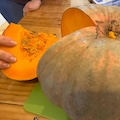
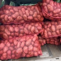
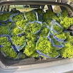
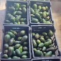
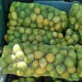
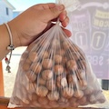

- Cerezas
- Moras


- Papas
- Limón
| Tipo | Productos | Región | Comuna | Fotos |
|---|---|---|---|---|
| Frutas |
- Frutillas - Cerezas - Moras |
Region del Maule | Curicó |
|
| Verduras |
- Zapallo - Papas |
Región Metropolitana | Buin |   |
| Verduras | - Lechuga | Región Metropolitana | San Bernardo |  |
| Frutas |
- Palta - Limón |
Región de Valparaíso | San Felipe |   |
| Frutas | - Avellana | Región de la Araucanía | Galvarino |  |